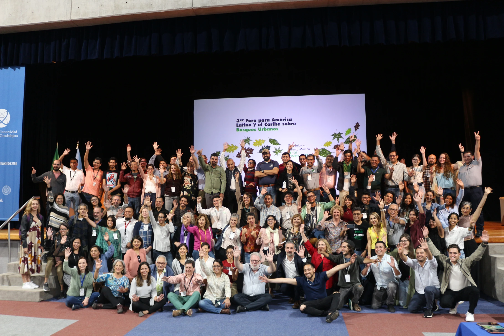
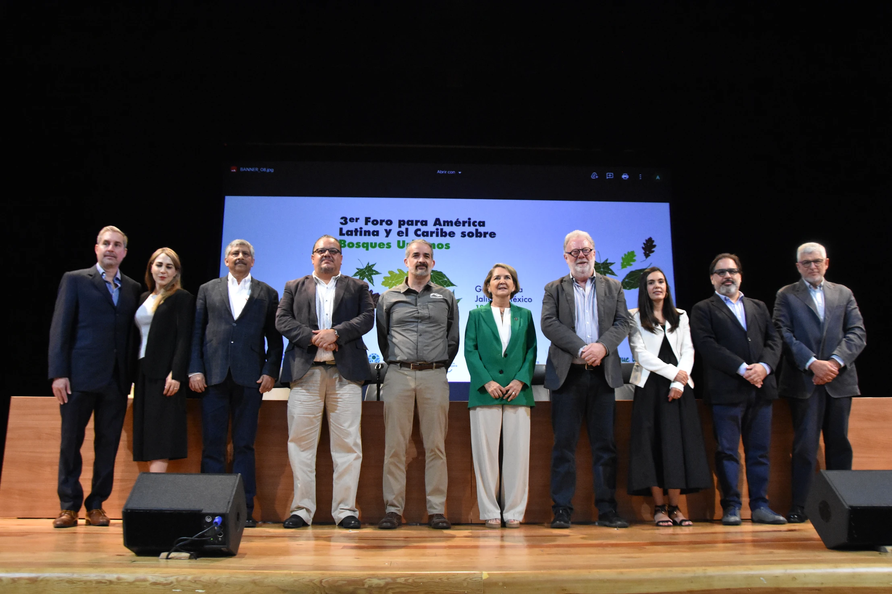

Reforestamos México A.C
Comparte esta nota en tus Redes Sociales
Durante el último día de trabajo se plasmaron acuerdos que formarán parte del Plan de Acción de Guadalajara que busca contar con ciudades más verdes, ricas y saludables en la región.
Hoy concluyó la tercera edición del Foro para América Latina y el Caribe sobre Bosques Urbanos realizado en Guadalajara, Jalisco, el cual reunió 20 personas expertas de Latinoamérica y 10 del continente europeo, quienes durante tres días compartieron sus conocimientos y experiencias en sobre los temas economía verde, la resiliencia climática, la relación de los bosques con la salud física y mental, así como la seguridad alimentaria.
Durante el último día de trabajo, las personas participantes del foro establecieron una serie de acuerdos en torno a las políticas públicas y legislación; educación y capacitación; investigación; y comunicación que serán plasmados en el Plan de Acción de Guadalajara para concretarlos en el corto y mediano plazo para tener ciudades más verdes, más ricas y más saludables en la región. Asimismo, este plan representa una contribución desde América Latina y el Caribe para el próximo Foro Mundial de Bosques Urbanos que se llevará a cabo el próximo año en Washington, D.C.
Como principales acciones y conclusiones por cada tema, destacan:
Sobre legislación y políticas públicas quedó asentada la necesidad de construir las leyes en materia forestal de abajo hacia arriba, es decir, con la participación de la ciudadanía y de personas expertas técnicas que puedan dar las bases del conocimiento en campo para atender las necesidades locales y, sobre todo, los habitantes de las ciudades se identifiquen y apropien de ellas.
Respecto al tema de educación y capacitación, se concluyó que el tema de bosques y arbolado urbano se debe democratizar; estar al alcance de los distintos actores involucrados en el manejo del arbolado urbano como son: personas tomadoras de decisiones, personal operativo de los gobiernos locales, colectivos barriales, jardineros empíricos que realizan prácticas de poda, jóvenes, mujeres y población en general. Las áreas educativas y de capacitación deben adaptar la información a los distintos perfiles y usuarios a través de plataformas que permitan redes de colaboración, generación y difusión de información, materiales, guías para mejorar la toma de decisiones y empoderar a la ciudadanía.
En materia de investigación se detectó que existen grandes desafíos para la divulgación, por lo que se acordaron 12 propuestas para fortalecer el conocimiento. Se propone la generación de un repositorio de información, la elaboración de un análisis sobre el estado actual de los bosques urbanos en Latinoamérica, así como la generación de un atlas de bosques urbanos; la organización de seminarios en línea, la creación de un laboratorio viviente, entre otras. De igual forma, se propone la redacción de un manifiesto o plan legislativo comunitario y un mecanismo transversal de financiamiento.
Sobre tema de comunicación, se consideró la necesidad de democratizar la información y conocimientos en esta materia para empoderar a las personas de los diferentes sectores de la sociedad con el fin de que participen de manera oportuna e inclusiva en esta agenda. Durante la clausura del evento el representante de la FAO en México, Simone Borelli, brindó un mensaje en cual comentó que este foro ha sido relevante en el proceso de identificación y priorización de actividades concretas para mejorar la calidad de vida de los ciudadanos a través del impulso del bosque y del arbolado urbano.
Posteriormente, el Gerente de Reforestación y Restauración de Cuencas Hidrográficas de la Comisión Nacional Forestal, Baldemar Arteaga Martínez, comentó que ha quedado clara la necesidad del manejo adecuado del medio ambiente dentro del espacio urbano, del desarrollo e incorporación de políticas públicas en pro de estos y de una cosmovisión amplia que permita una sinergia entre el medio ambiente y la población.
Por su parte, Jorge Eduardo Villaseñor Pérez, titular de la Agencia Metropolitana de Bosques Urbanos agradeció la organización y el desarrollo del Foro. Destacó las conclusiones en materia de investigación, sobre todo para la construcción de programas y planes para tener más y mejores ciudades eco-urbanas.
En representación de la directora de Medio Ambiente del Ayuntamiento de Guadalajara, Pablo García destacó la participación de las y los expertos en el tema. Además, comentó que desde la capital de Jalisco se realiza la concientización y la profesionalización de las y los servidores públicos para que conciban al arbolado urbano como seres vivos y no como infraestructura. Para finalizar, el Director General de Reforestamos México, Ernesto Herrera Guerra, agradeció a todas las personas involucradas en la organización del foro, así como a las y los participantes, y dio por clausurado este evento.
Comparte esta nota en tus Redes Sociales